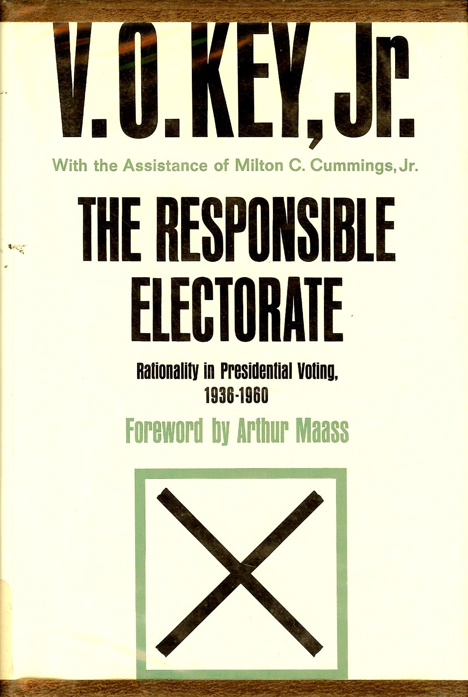

Michigan Model
The work of Lazarsfeld and his Columbia colleagues demonstrated the rich potential of election surveys as data for understanding campaigns and elections. The next, and even more important, advance in election studies emerged in the following decade at the University of Michigan.
The American Voter portrayed an electorate whose orientations toward politics were strongly influenced by partisan loyalties developed early in life, whose votes in specific elections reflected the overlaying of short-term forces such as Eisenhower’s personal popularity upon these long-term influences, and whose familiarity with and attachment to abstract ideologies and policy agendas was remarkably limited. In the subsequent half-century, every major element of this portrait has been subjected to energetic criticism and painstaking reevaluation using new data, theories, and research methods. In my view, at least, none of the scores and hundreds of resulting scholarly books and articles has succeeded in making a significant dent in the central precepts and findings of what has come to be called the “Michigan model” of electoral studies. While elaborations and modifications in detail have been plentiful and productive, more ambitious revisionists have invariably turned out either to be attacking a caricature of the original argument (which often proves upon rereading to be a good deal richer and more nuanced than its critics give it credit for), or to be even more time-bound in their perspectives than the original authors acknowledged themselves to be, or to be simply wrong about the facts. By the standards of empirical social science, The American Voter has been a work of remarkable influence and staying power.